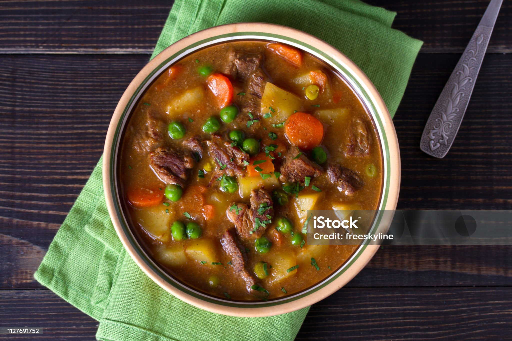

Beef Stew

Description
A tasty beef stew perfect for a cozy day at home.
This recipe will take around 30 minutes to prepare with a cooking time of 2 hours and 30 minutes.
It should serve around 6 people.
Ingredients
- Bacon
- Beef chuck
- Seasoning and herbs
- Beer
- Vegtables
- Tomato paste
- Stock
- Potatoes
Steps
- Cook bacon and transfer to a stewing pot
- Cook beef in bacon fat
- Add onions and garlic along with beer
- Add remaining ingredients
- Simmer until meat is tender and sauce has thickened
- Serve in a bowl and garnish